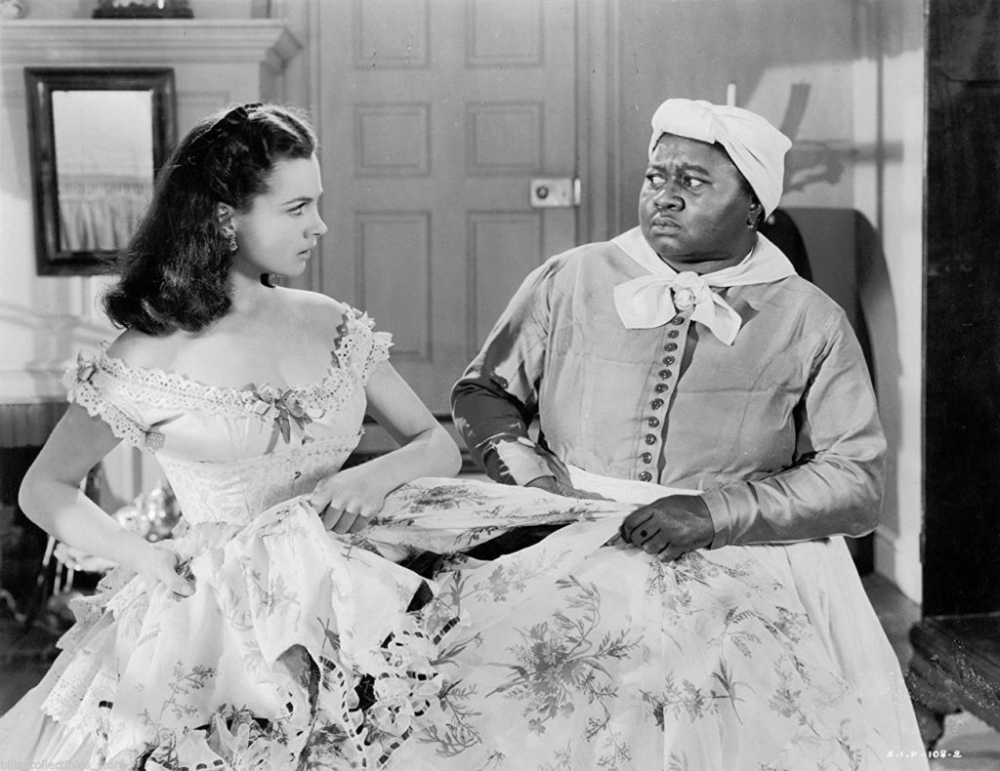
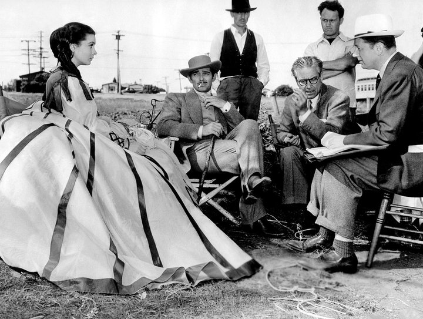
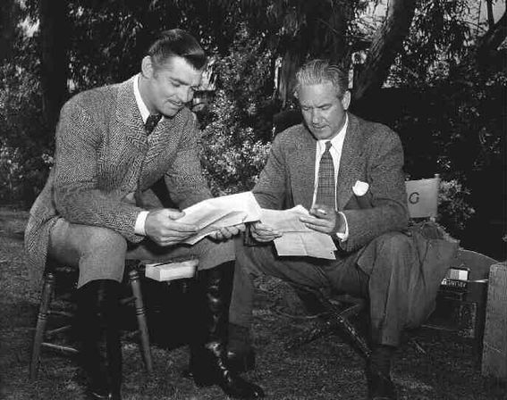
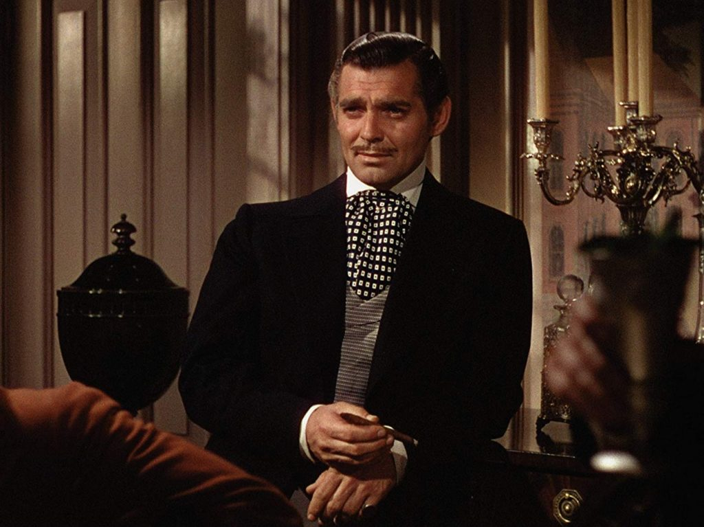
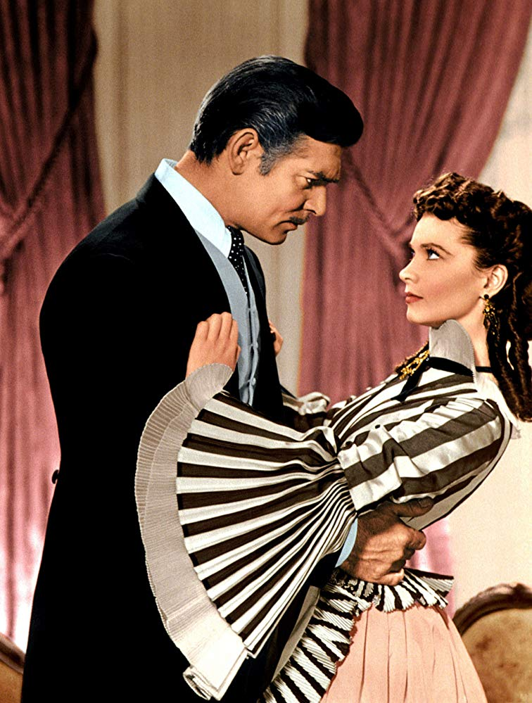

By Lucia Adams
I first saw GONE WITH THE WIND in 1961 — in Columbus, Georgia! After Gettysburg and the last gasp of the Confederacy the audience stood up when Dixie played, with tears in their eyes and fury in their hearts. I dared not utter a Yankee whisper.
The next time I saw GWTW was in the Seventies cheering on Scarlett O’Hara for forging her own path regardless of what men thought, a feminist manifesto in period clothing. There she remained until on the umpteenth viewing on television I was astonished I ever admired this Black Widow who stopped at nothing to get what she wanted, walloping her sister, her slave Prissy, her husband and even drippy Ashley, hard in the face, ignoring her parent’s pleas to be kinder to “inferiors” including the Union prisoners whipped and starved in her lumber mill, pathologically remorseless after the death two husbands, whose deaths she caused, an alcoholic who exploited the misery of others.

Only Mammy, the moral heart of the film, knew the truth and in the first minutes of the film calls her a big spider waiting to pounce on a victim. Scarlett never changes, never evolves, never learns even at the last minute when Rhett Butler her third victim-husband tells her to go to hell.
At first Rhett Butler sees in her a mirror image of himself, and loves her for exactly what she is, then gradually learns that behind her beautiful pixie face is a corrupt heart eager for money and revenge and he fights fights back with sarcasm— and bourbon. The blockade runner, war profiteer and black sheep from Charleston, expelled from West Point (we like to think for refusing to fight) Rhett scoffs at the stupidity of Confederates who have no hope of winning the war. Declaring “The only cause I know is Rhett Butler,” we gradually see behind the facade. Though hopelessly in love with a gorgeous monster he metamorphoses into a man of honor and conscience and saves the main characters from certain death.

The stars with Victor Fleming.
Margaret Mitchell wrote the War of the Butlers but it was the Golden Age director Victor Fleming who created the Scarlett and Rhett we know, coaxing the best performances of their careers from Vivien Leigh and Clark Gable as the warring couple in a warring civilization. The drama is intense and sustained, Fleming sharpening the directorial pen to the point of violence and creating Pop artish boldly colorful main characters by commanding the actors at every turn to “Ham it Up”.
Dirt poor son of orange pickers in California defiantly anti-intellectual and working class Victor Fleming was a mechanic, stuntman and race car driver before becoming a cameraman for Douglas Fairbanks and President Wilson at Versailles — when opportunities abounded in the new industry. Tall, handsome a rugged “man’s man” he had affairs with many of his leading ladies just like Gable who he catapulted to stardom in Red Dust in 1932. They became best friends and hunting buddies. He was directing The WIzard of Oz when asked by producer David O. Selznick to take over GWTW from snail-paced George Cukor and became the only director with two films, Wizard and GWTW, in the top 10 of the American Film Institute’s list of the 100 greatest films.

Gable and Fleming.
Gary Cooper was Selznick’s first choice for Rhett and when the bland everyman fortunately declined Gable was chosen but refused to work for Cukor whom he called “a fairy” and “a woman’s director”, giving too much weight to Melanie and Scarlett and agreeing to play Rhett only if his friend Fleming was director.
Fleming’s first job was to edit the script which he thought “no f—ing good” giving Rhett a more important role. Legend has it that Gable was really Victor Fleming in the film and as associate on the set observed, “There was more of Fleming in [Clark Gable] than there was Gable in Gable. I think that Gable really mimicked Victor Fleming and became that kind of man on the screen”.
Gable the hard drinking playboy whose scandals the studio covered up was from a modest Ohio family, oil driller, logger and Frank Capra his director in One Happened One Night said he most closely resembled Peter Warne the down-to-earth he-man reporter (and to 2018 eyes a misogynist) who loved common people and didn’t want to play big lover parts. He really just wanted to play Clark Gable.
Fleming convinced him it was not unmanly to cry when Rhett hears of Scarlett’s miscarriage though he never shed tears in any previous film.
Clark charged his pal with slave-driving tactics, commenting loudly on the cruelty making him carry Vivien Leigh up a flight of stairs 22 times: “Clark,” retorted Fleming, “I’ll let you in on a secret…. The third take was okay–you carried her upstairs the other 19 times for exercise!”
Selznick conducted a marathon search for Scarlett— Miriam Hopkins, Bette Davis, Katharine Hepburn, Norma Shearer, Lana Turner, Jean Arthur, Joan Bennett —just go to YouTube and see how unthinkable it would be not have nervous, neurotic, even quite mad Vivien Leigh who like Scarlett was the despair of every man who ever loved her. Though she said “I never liked Scarlett. I knew it was a marvelous part but I never cared for her.” Fleming knew they were very much alike.

Leigh and Gable disliked one another and gave catty interviews to gossip columnists at the drop of a hat. He thought the upper class colonialist born in India a bookish snob always reading Mitchell’s novel and she despised their love scenes feeling utterly no attraction to him. She also disliked Fleming who cajoled and bullied her, once telling her when she insisted on following the novel, “Miss Leigh, you can stick this script up your royal British a—.” part of a strategy to stop her making Scarlett too sympathetic too early on.
Working with Leigh was difficult, suffering as she did from undiagnosed bipolar disorder, but Fleming exploited this mania, depression and mood swings, the hysterical edge she had, the Jekyll Hyde scorpion one minute, sweet as a honey bee the next always urging Leigh to give Scarlett’s bitchiness full rein. In a scene where Rhett moves in on Scarlett, Fleming instructed her, “Resist but don’t resist too much.” Yet, as Gable reached for her, she slapped him. Fleming said, “That’s swell!”, and it stayed in the movie.

Leigh hurried filming along to rejoin her lover Laurence Olivier in London and insisted on working 16 hours a day, six days a week, for 125 days. Cammie Conlon, who played Bonnie Blue Butler, said, “I have candids of her taken on set. She is exhausted. She was in every scene, almost.” She chain-smoked four packs of cigarettes a day and was paid $25,000 for 125 days work whereas Gable worked 71 days and received $120,000.
Hattie McDaniel asked by friends not to act as a slave in GWTW said she would “rather make $700 a week playing a maid, than seven dollars being one”! When Gable learned his friend McDaniel and other African American stars were not allowed to attend the premier in Atlanta he threatened a boycott but she talked him into going.
POSTSCRIPT
GONE WITH THE WIND stirred controversy this year when Confederate monuments were removed throughout the south. Both Mitchell and Fleming were far more right than left wing and the film can seem like a partisan defense of plantation life suggesting the wrong side surrendered at Appomattox, but as Roger Ebert wrote, “The movie comes from a world of values and assumptions fundamentally different from our own — and yet, of course, so does all great classic fiction, starting with Homer and Shakespeare. A politically correct “GWTW” would not be worth making and might largely be a lie.”